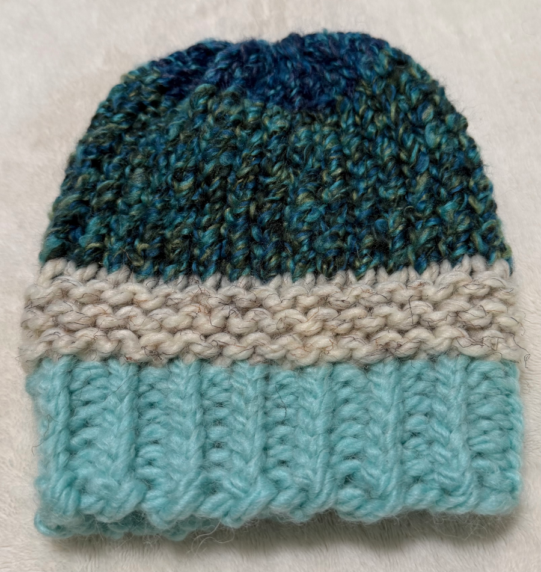
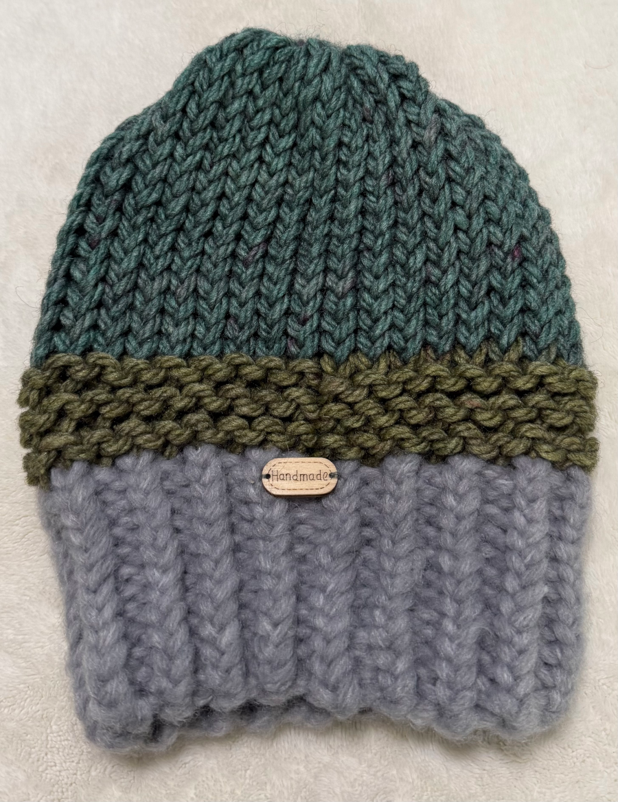
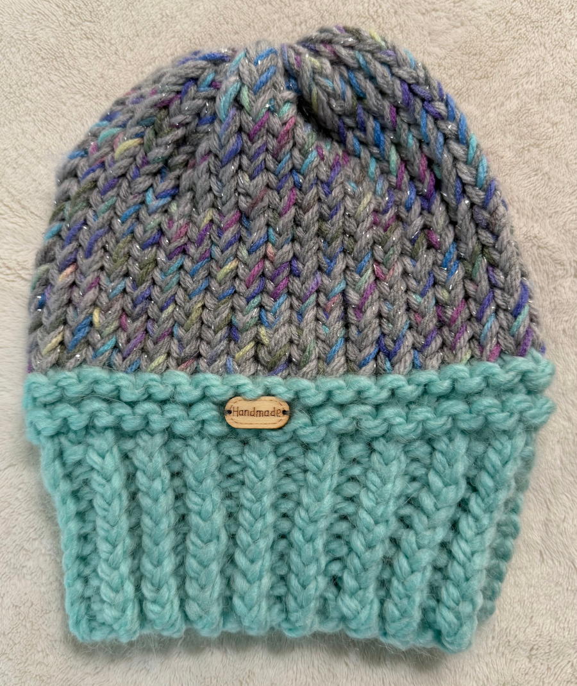

Explore our beanies
Discover our exclusive range of handmade winter beanies, each designed for ultimate warmth and style. From classic designs to unique patterns, our collection offers something for everyone. Made with premium materials, our beanies provide superior comfort and durability, perfect for braving the winter chill. Find your perfect beanie today!

 |
 |
 |
 |
 |
 |
 |  |
 |  |
New arrivals
Be the first to see our latest creations! Our new collection features fresh designs and cozy materials to keep you stylish and warm all season long. Check out our new arrivals now, handcrafted beanie to your winter wardrobe.
View our new arrivalsHandmade with passion
Each Homemade Winter Beanie is carefully crafted by hand in Elkridge, Maryland. We pour our heart into every stitch, ensuring that you receive a beanie of the highest quality. Experience the warmth and comfort that only a handmade beanie can provide.